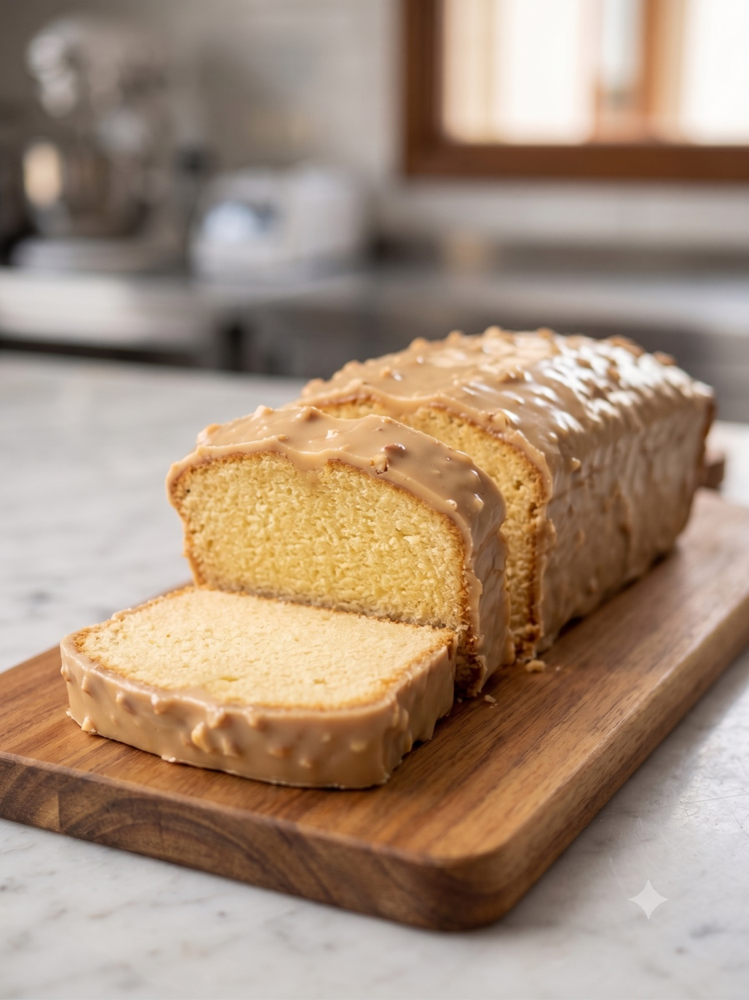

Cake
Las Claves de la Pastelería · Clase de Cakes
Cake cuatro cuartos
Cake clásico de partes iguales con glucosa y pasta de vainilla, terminado con un baño dulce de chocolate y nueces.
EscuelaEcoleCursoLas Claves de la PasteleríaChef instructoraFernanda PérezDía de realización7 de julio de 2026
Páginas 16 y 17 del PDF escaneado.
Elaboraciones
Esta receta reúne 2 elaboraciones, en el orden en que se montan. Las anotaciones de clase van al final de cada una, separadas del paso a paso.
a
Cake
Página 16 del PDF escaneado.
Ingredientes
| Mantequilla | 250 g |
| Azúcar flor | 234 g |
| Glucosa | 17 g |
| Sal | 1,5 g |
| Huevo entero | 250 g |
| Harina | 250 g |
| Polvos de hornear | 4 g |
| Pasta de vainilla | 2 g |
Procedimiento
- En la máquina con la pala pomar la mantequilla con el azúcar flor, la sal y la pasta de vainilla.
- Añadir los huevos previamente revueltos en tandas para que se unan correctamente a la mezcla anterior.
- Tamizar los secos, harina más polvos de hornear, y añadirlos a la mezcla fuera de la máquina con ayuda de un mezquino y movimientos envolventes.
- 500 g de mezcla al molde previamente forrado con papel mantequilla.
- Dejar en refrigeración por 1 a 2 horas antes de hornear.
- 150 °C por 40 minutos.
Notas y anotaciones de clase
- [Lectura probable] Una llave agrupa «Azúcar flor 234 g» y «Glucosa 17 g» con la suma «250» y una palabra que parece «humectante».
- «Almíbar al final. 1 azúcar / 2 líquidos».
- «Emulsión: mezclar agua con aceite (ganache)».
- Orden de incorporación indicado por la chef: después de mantequilla y azúcar, incorporar 1. los secos; 2. los huevos.
b
Baño dulce y con nueces
Página 17 del PDF escaneado.
Ingredientes
| Chocolate dulce | 200 g |
| Aceite | 90 g |
| Nueces tostadas | 20 g |
Procedimiento
El original no incluye procedimiento para este baño.